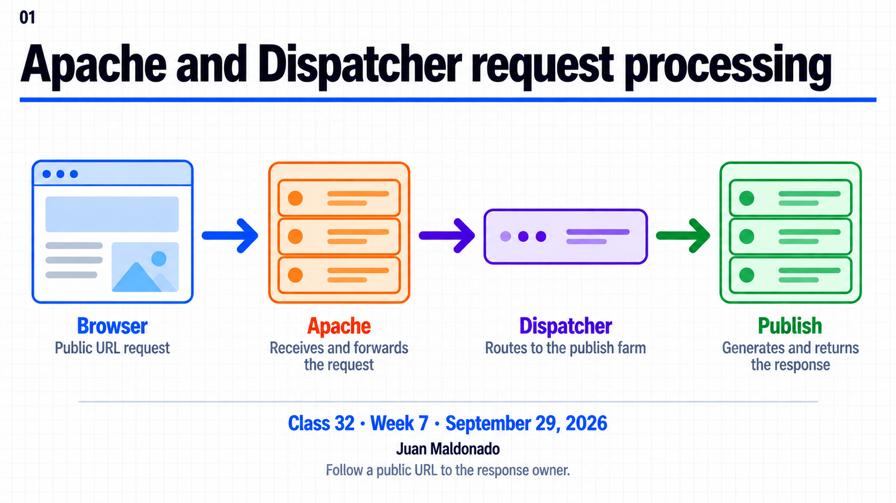
Topic summary
Apache selects a virtual host and applies request rules. Dispatcher selects a farm, evaluates filters and routes allowed requests to a renderer. An internal rewrite keeps the browser URL; a redirect sends a 3xx response and Location. A denied Dispatcher filter request normally returns 404. A 403 or 404 alone does not identify the responding layer.
30-minute agenda
| Time | Slides | Focus |
|---|---|---|
| 0–4 | 1–2 | One Host, URL and request route. |
| 4–11 | 3–4 | Virtual host and Dispatcher farm. |
| 11–18 | 5–7 | Rewrite, redirect, filters and headers. |
| 18–27 | 8–10 | 403/404 investigation and local comparison. |
| 27–30 | 11–12 | First divergence and questions. |
For 60 minutes, add a guided local run and discuss the three supplied response traces. The Spanish guide includes commands, evidence fields and expected answers.
Complete slide deck
Copy each complete numbered image to PowerPoint or download its PNG.
{kind=link}
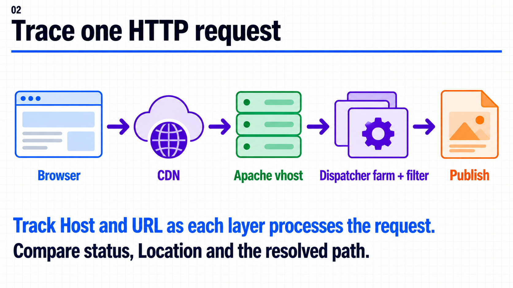
{kind=link}
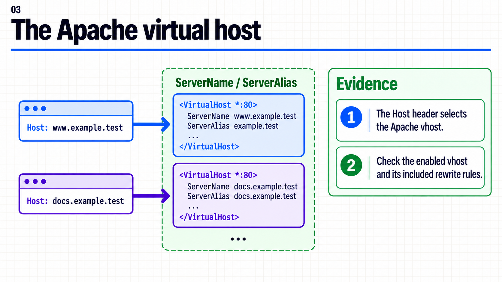
{kind=link}
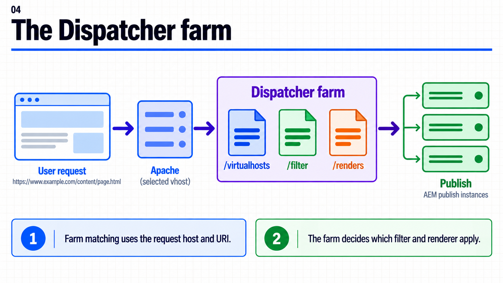
{kind=link}
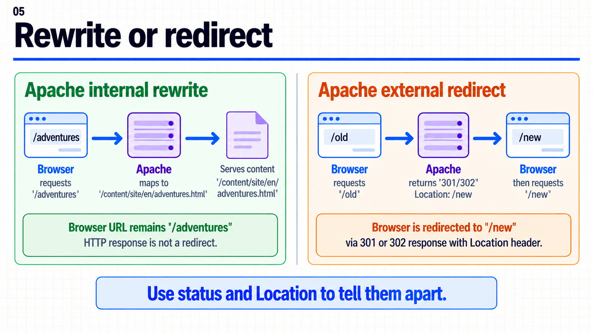
{kind=link}
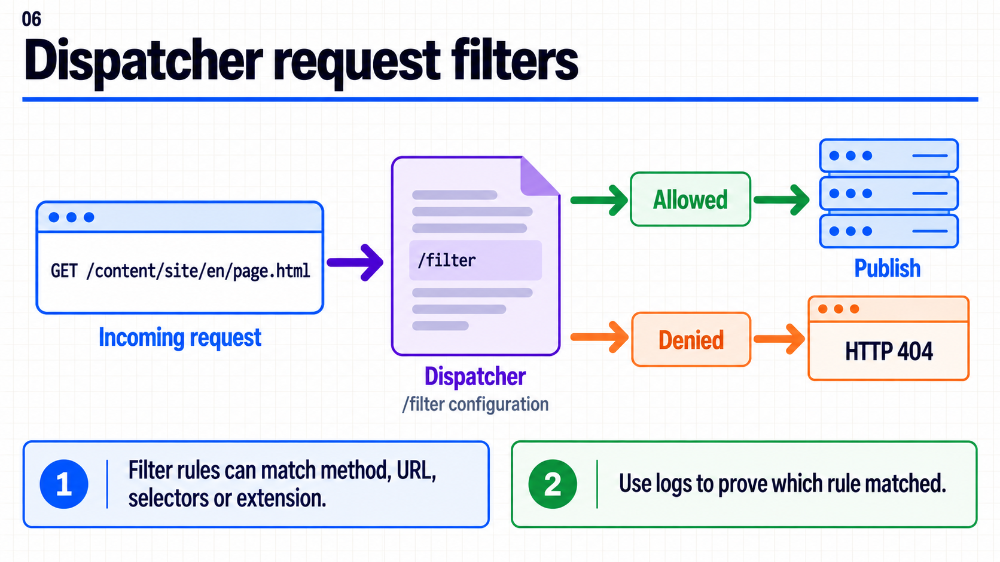
{kind=link}
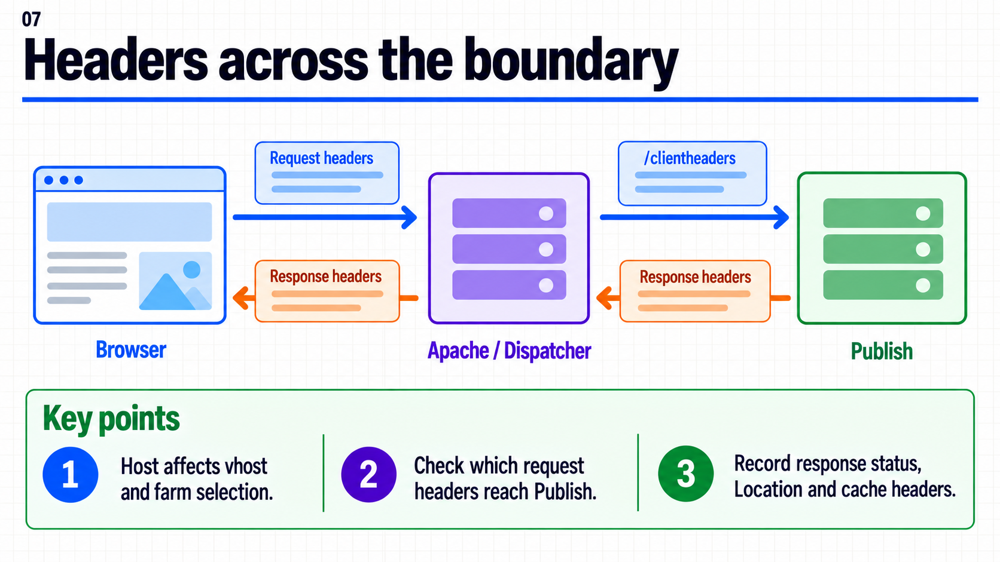
{kind=link}
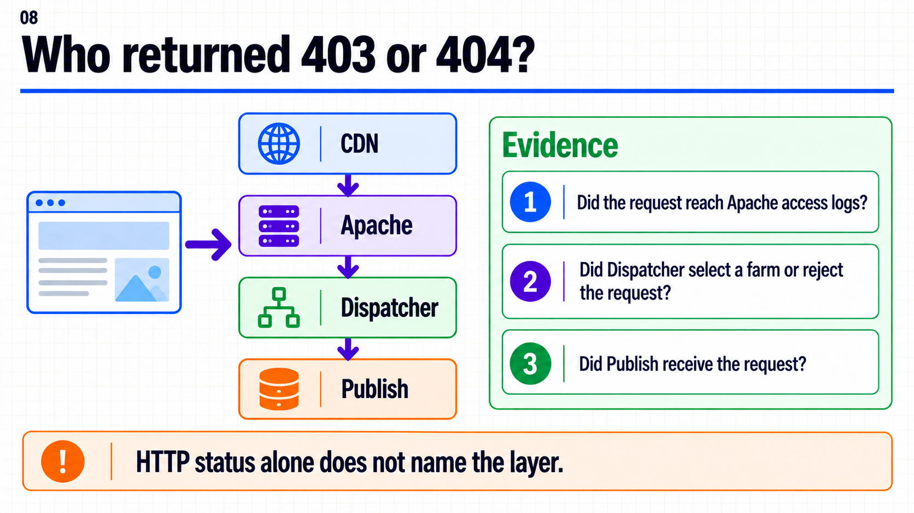
{kind=link}
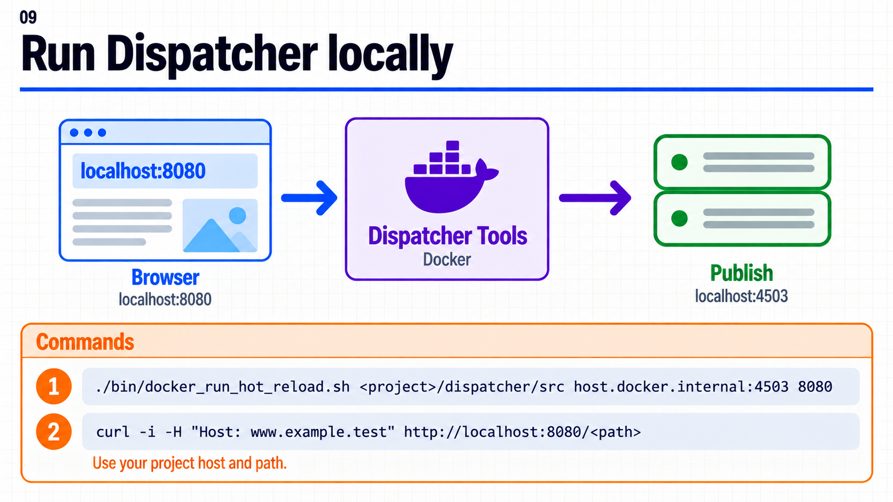
{kind=link}
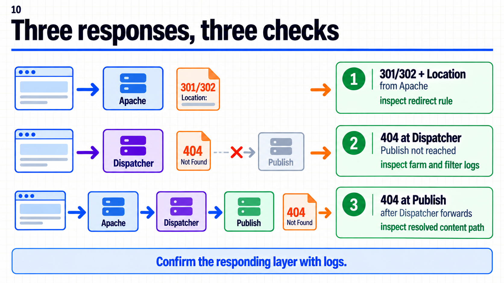
{kind=link}
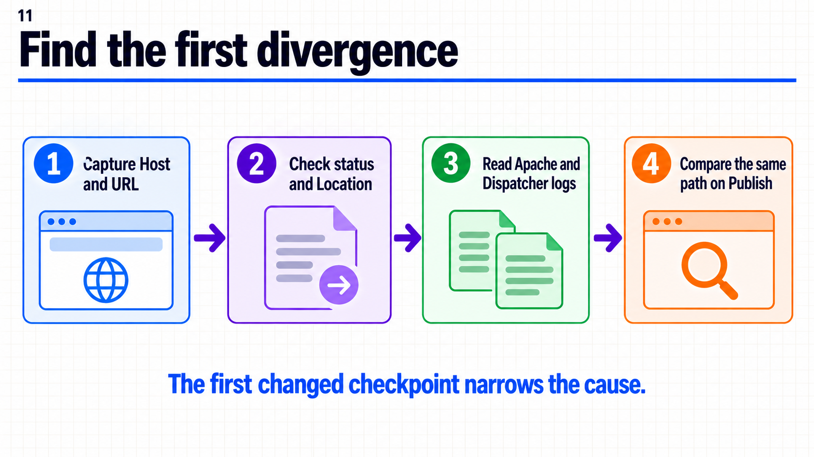
{kind=link}
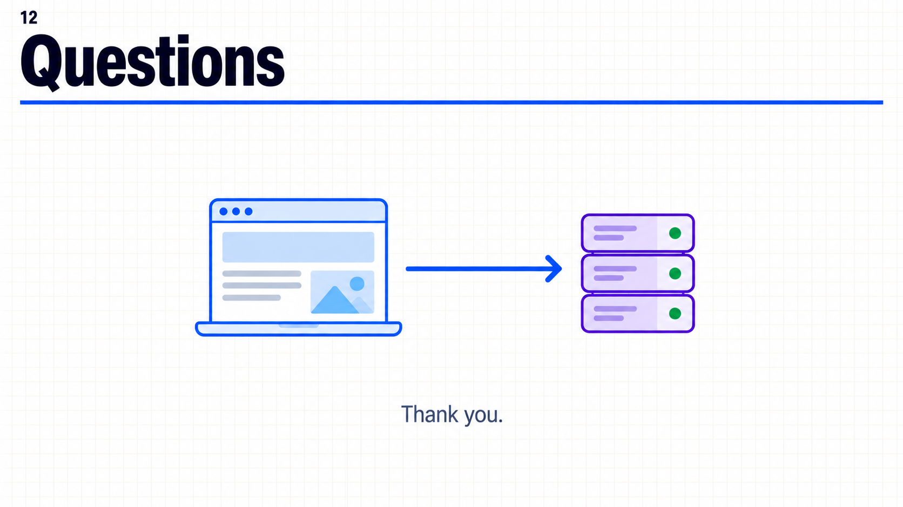
{kind=link}
Demo local
Ejecuta Dispatcher Tools contra el dispatcher/src de tu proyecto y Publish local :4503. Haz una petición a :8080 con el Host configurado y compárala con Publish. La guía paso a paso separa redirect, rechazo de filtro y 404 en Publish. Los resultados son esperados; no hay una ejecución local registrada en este repositorio.